Ces méthodes permettent de synthétiser et de visualiser un tableau de données. Le choix de la méthode dépend du type de variables analysées.
Analyse en composantes principales (ACP)
Type de données : individus en ligne et variables quantitatives en colonnes.
Objectifs de la méthode :
Etudier les individus : construire des groupes d'individus qui se ressemblent du point de vue des variables
Etudier les variables : rechercher les liaisons linéaires entre les variables, visualiser la matrice des corrélations et rechercher des indicateurs synthétiques qui peuvent résumer les variables
Etudier le lien entre les variables et les individus
library(FactoMineR)data(iris)PCA(iris[,1:4]) # On retire la colonne avec des données qualitatives
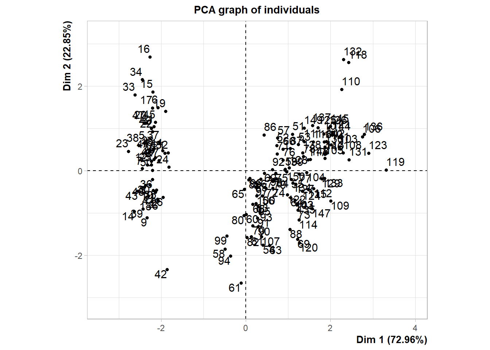
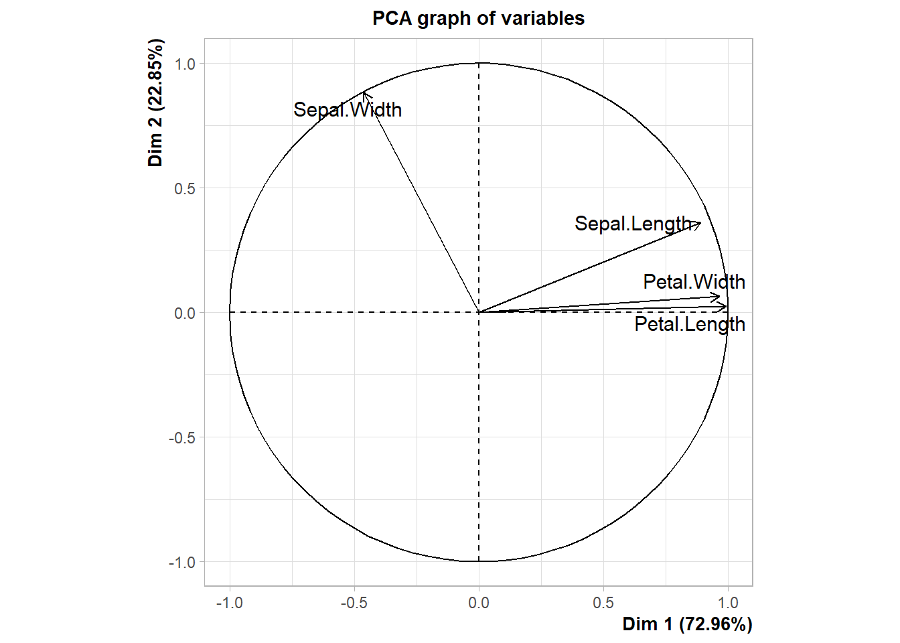
**Results for the Principal Component Analysis (PCA)**
The analysis was performed on 150 individuals, described by 4 variables
*The results are available in the following objects:
name description
1 "$eig" "eigenvalues"
2 "$var" "results for the variables"
3 "$var$coord" "coord. for the variables"
4 "$var$cor" "correlations variables - dimensions"
5 "$var$cos2" "cos2 for the variables"
6 "$var$contrib" "contributions of the variables"
7 "$ind" "results for the individuals"
8 "$ind$coord" "coord. for the individuals"
9 "$ind$cos2" "cos2 for the individuals"
10 "$ind$contrib" "contributions of the individuals"
11 "$call" "summary statistics"
12 "$call$centre" "mean of the variables"
13 "$call$ecart.type" "standard error of the variables"
14 "$call$row.w" "weights for the individuals"
15 "$call$col.w" "weights for the variables"
Etudier les individus
La ressemblance entre les individus = distance (au carré) entre les individus.
L'objectif de l'ACP est de trouver la « forme » (plan) du nuage qui résume le mieux les données. Cette forme est celle qui maximise l'inertie (dispersion ou variabilité).
Une ACP produit 2 représentations graphiques :
Le graphe des individus
Le cercle des corrélations. Pour analyser les flèches :
Proximité avec la dimension permet de voir les variables qui contribuent le plus à cette dimension (ex : octobre dans la capture ci-dessous est-fortement corrélé à la première dimension et très faiblement corrélé à la seconde, car sur dim1, coordonnées Octo sont proches de 1, soit de la corrélation et proches de 0 sur la dim2).
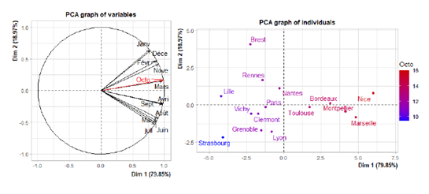
Si on prend par la suite l'exemple de juin, sur la dim2, les coordonnées sont -0.5, donc la corrélation est de -0.5. Ainsi, les villes avec des T° élevées en juin ont des coordonnées plutôt faibles sur la dim2.
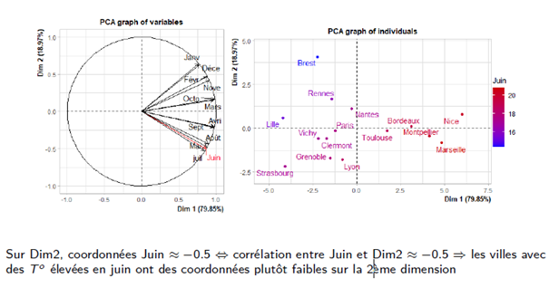
Etudier les variables
L'étude des variables est réalisée via la matrice de corrélation et via le cercle des corrélations. Attention, sur le cercle des corrélations, la longueur de la flèche donne la qualité de la projection de la variable. Plus est longue, plus la projection est bonne. Seules les variables bien projetées peuvent être interprétées.
Aides à l’interprétation
Le pourcentage d'inertie : donne le nombre de dimensions à interpréter. Sur une ACP, quand le pourcentage passe sous la barre des 10%, on estime qu'il n'est plus nécessaire de regarder la dimension considérée.
Pour les variables supplémentaires : on projette les barycentres des individus qui prennent cette modalités (ex : région ci-dessous).
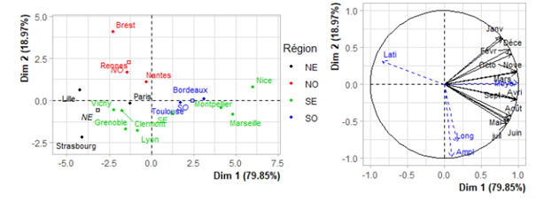
La qualité de représentation d'une variable ou d'un individu est donnée par le cos2. Seuls les éléments bien projetés peuvent être interprétés.
On peut regarder la contribution d'une variable à la construction de l'axe.
Analyse les niveaux de corrélation entre les variables et les dimensions (ex : juin = -0.5 dans l'exemple de la partie précédente).
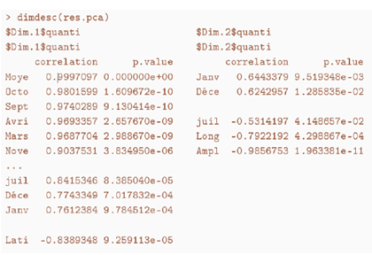
Les ellipses de confiance
Plus elles sont grandes, plus la dispersion dans le groupe d'individus étudié augmente
L'orientation des ellipses représente la corrélation entre les composantes principales. Si l'ellipse est allongée dans une direction spécifique, cela veut dire que les individus sont fortement corrélés dans cette direction
Si les ellipses se chevauchent, cela suggère une proximité entre les groupes d'individus (et à l'inverse, on peut identifier des groupes différents)
Pour les interpréter, il est dans tous les cas nécessaire de regarder les variables qui contribuent le plus aux dimensions étudiées.
Pour mettre en oeuvre l’ACP
Choisir les variables actives
Choisir de réduire ou non les variables (si unités différentes, on réduit toujours)
Réaliser l'ACP (factoshiny)
Choisir le nombre de dimensions à interpréter (inertie expliquée par les dimensions)
Interpréter simultanément le graphe des individus et celui des variables
Utiliser les indicateurs pour enrichir l'interprétation
Revenir aux données brutes pour interpréter
Exercices
Exercice 1
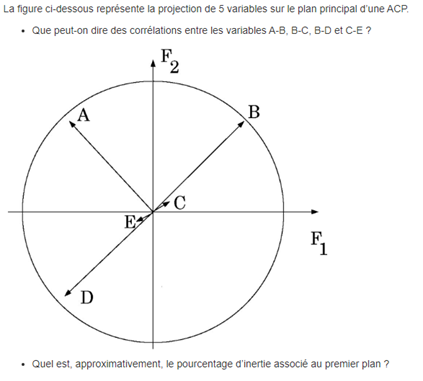
Que peut-on dire de la corrélation entre les variables :
A-B : angle à 90°, donc cos proche de 0 = absence de corrélation
B-C : C est mal projeté. B est bien projeté. Elles sont quasi orthogonales, donc les 2 variables sont indépendantes
B-D : les deux variables sont corrélées négativement. Quand une augmente, l'autre diminue
C-E : les deux variables sont mal projetées. On ne peut rien dire
Quel est le pourcentage d'inertie associé au premier plan
Environ 3/5, soit 60% (car 3 variables sur les 5 sont très bien projetées).
Exercice 2
Analyse la qualité globale de la projection
Même en tenant compte du faible nombre d’individus (8), la qualité globale de projection est plutôt élevée sur le plan factoriel : le pourcentage d’inertie expliquée par le plan principal est de 88%. Cela signifie que 88% de la variabilité des données est exprimée sur le plan principal. Le 1er axe en particulier est largement prépondérant (74% à lui seul).
Interpréter les axes 1 et 2 de l'ACP
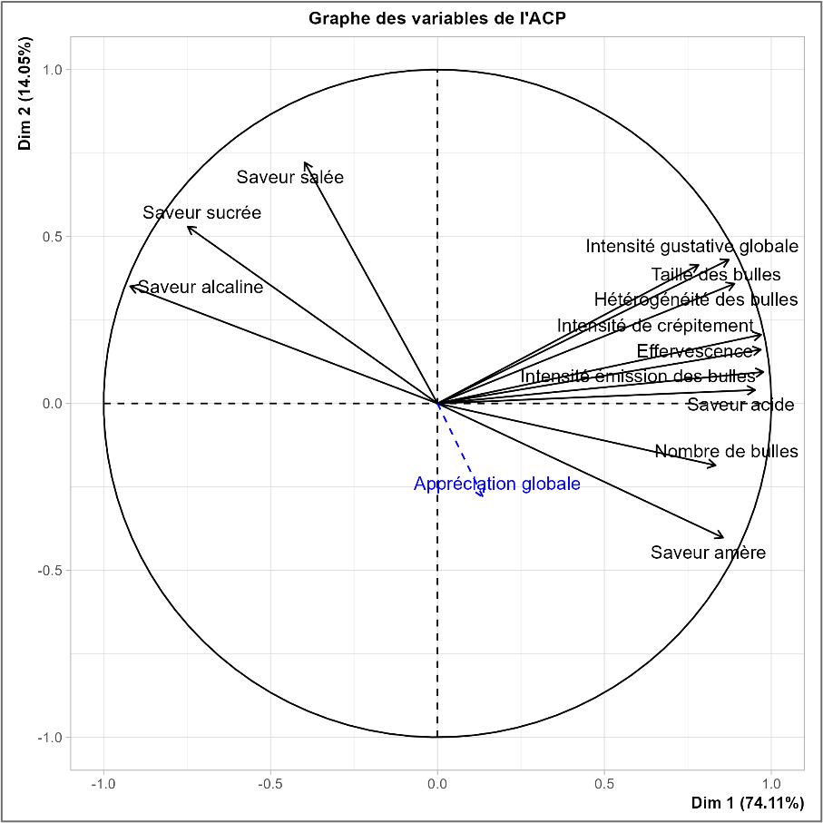
Le graphe des variables montre que beaucoup de variables sont bien représentées (car la pointe des flèches est proche du cercle) et sont très corrélées avec le premier facteur.
Les corrélations entre les variables et le facteur sont très importantes (proches de 0.9). Les variables fortement corrélées positivement au 1er facteur sont les variables qui caractérisent les bulles, ainsi que la saveur amère, saveur acide. La variable saveur alcaline est corrélée négativement avec le 1er facteur (-0.92) et est corrélée négativement avec les variables qui caractérisent les bulles.
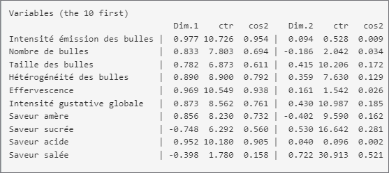
Le 1er axe oppose les eaux perçues comme très pétillantes et peu alcalines aux eaux perçues comme peu pétillantes et très alcaline. C’est donc l’aspect pétillant qui différencie le plus les eaux d’un point de vue sensoriel.
Le 2ème axe est plutôt corrélé à la variable salée (corrélation 0.72) et oppose donc les eaux salées aux eaux non salées.
L’axe 1 oppose principalement les eaux Perrier et Quézac. Perrier est très pétillante (coordonnées fortement positive), tandis que Vichy est très peu pétillante (coordonnées négatives).
L’axe 2 oppose principalement l’eau St Yorre (particulièrement salée) aux eaux Badoit et Salvetat (très peu salées).
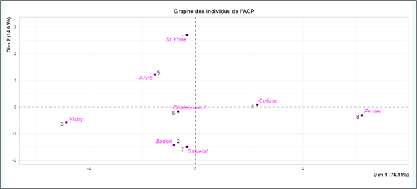
Quelles eaux ont joué un rôle prépondérant dans la construction de l’axe 1 ? Sur quels descripteurs s’opposent les eaux situées aux deux extrémités de cet axe ?
L’eau Perrier et l’eau de Vichy ont fortement contribué à la construction du 1er axe : 54.3% pour l’eau de Perrier (individu 8) et 33% pour l’eau de Vichy (individu 3).
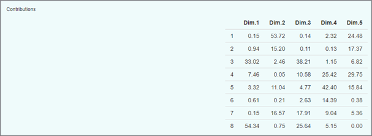
Les eaux Perrier et Vichy s’opposent d’un point de vue pétillant (Perrier est très pétillante alors que Vichy est peu pétillante) ainsi que du point de vue de la saveur alcaline (Vichy est très alcaline et Perrier très peu).
Les eaux qui ont joué un rôle prépondérant dans la construction de l’axe 1 sont :
Perrier (cos² = 0.95)
Vichy (cos² = 0.88)
Quézac (cos² = 0.75)
Ces eaux s’opposent sur les descripteurs suivants :
Saveur acide
Intensité des émissions de bulles
Effervescence
Intensité du crépitement
Pourquoi la variable “Appréciation globale” (la note hédonique) a-t-elle été introduite en tant qu'illustrative ? À quoi sert-elle comme variable illustrative ? Est-elle bien représentée sur le plan principal ? Interpréter sa projection.
L’appréciation globale est une variable de nature différente des descripteurs. L’appréciation globale est personnelle. Cette variable est une variable illustrative car on a souhaité positionner les eaux du point de vue de la description sensorielle. L’appréciation globale est mal représentée sur le plan, autrement dit elle n’est pas corrélée aux principales dimensions sensorielles. Certains juges apprécient les eaux pétillantes et d’autres préfèrent les eaux peu pétillantes, certains apprécient les eaux salées et d’autres préfèrent les eaux peu salées.
Analyse des correspondances
Type de données : tableau de contingence (exemples où le test d'indépendance du khi² peut être appliqué. L'exemple donné dans le cours est un tableau présentant la répartition des prix Nobel en fonction des pays).
Objectifs de la méthode : étudier les individus et les variables, mais ce qui est étudié ici, c'est l'écart au profil moyen.
Le « nuage » produit permet de visualiser l'écart à la situation théorique d'indépendance. Si tous les profils sont confondus au profil moyen, nous sommes dans une situation d'indépendance.
iris_CA <- iris %>%mutate(autre =case_when(Sepal.Length <5~"Moins de 5 cm", Sepal.Length <6~"Moins de 6 cm", Sepal.Length <7~"Moins de 7 cm", Sepal.Length <8~"Moins de 8 cm",.default ="Autre"))table_contingence <-table(iris_CA$autre, iris_CA$Species)CA(table_contingence)
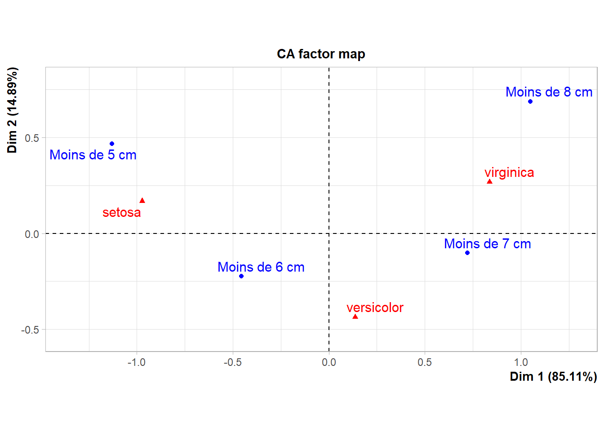
**Results of the Correspondence Analysis (CA)**
The row variable has 4 categories; the column variable has 3 categories
The chi square of independence between the two variables is equal to 97.82799 (p-value = 7.120506e-19 ).
*The results are available in the following objects:
name description
1 "$eig" "eigenvalues"
2 "$col" "results for the columns"
3 "$col$coord" "coord. for the columns"
4 "$col$cos2" "cos2 for the columns"
5 "$col$contrib" "contributions of the columns"
6 "$row" "results for the rows"
7 "$row$coord" "coord. for the rows"
8 "$row$cos2" "cos2 for the rows"
9 "$row$contrib" "contributions of the rows"
10 "$call" "summary called parameters"
11 "$call$marge.col" "weights of the columns"
12 "$call$marge.row" "weights of the rows"
Les aides suivantes peuvent être mobilisées pour interpréter les résultats fournis :
La mesure de l'inertie ;
Les niveaux de contributions ;
Les éléments supplémentaires.
Analyse des correspondances multiples (ACM)
Objectifs de la méthode : idem que l'ACP
Type de données : à utiliser lorsque le tableau présente des variables qualitatives.
df_mca <-data.frame(individus =seq(from =1, to =10, by =1),couleur =c("vert", "vert", "rouge", "jaune", "rouge", "vert", "jaune", "jaune", "bleu", "bleu"),taille =c(1.8, 1.55, 1.4, 1.69, 1.65, 1.9, 1.56, 1.8, 1.6, 1.59),reponse =c("A", "B", "A", "B", "C", "C", "C", "B", "A", "B"))MCA(df_mca[, c(2,4)]) # On ne prend vraiment que les variables qualitatives !
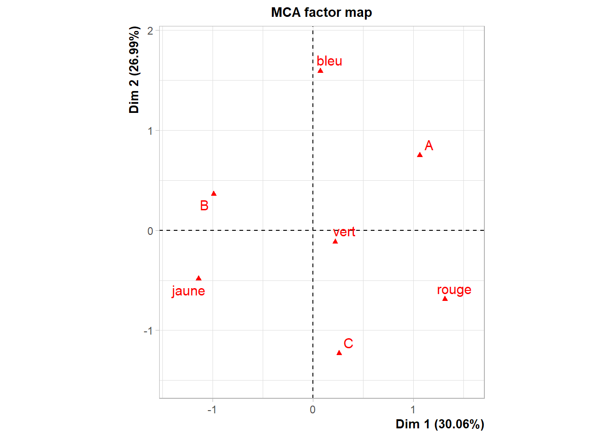
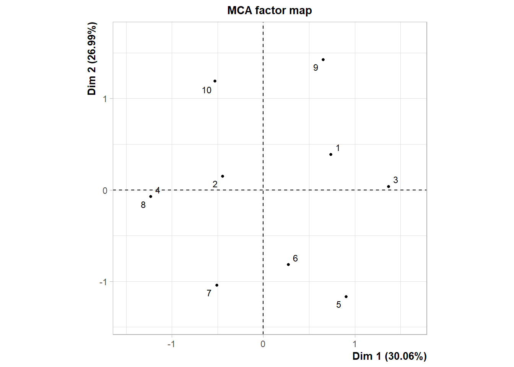
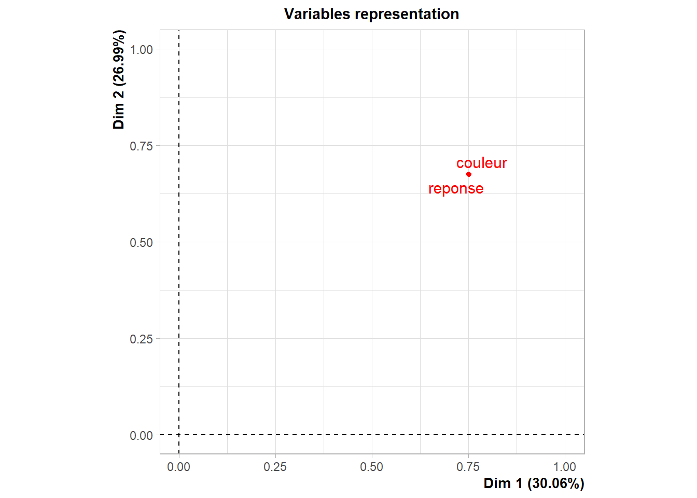
**Results of the Multiple Correspondence Analysis (MCA)**
The analysis was performed on 10 individuals, described by 2 variables
*The results are available in the following objects:
name description
1 "$eig" "eigenvalues"
2 "$var" "results for the variables"
3 "$var$coord" "coord. of the categories"
4 "$var$cos2" "cos2 for the categories"
5 "$var$contrib" "contributions of the categories"
6 "$var$v.test" "v-test for the categories"
7 "$ind" "results for the individuals"
8 "$ind$coord" "coord. for the individuals"
9 "$ind$cos2" "cos2 for the individuals"
10 "$ind$contrib" "contributions of the individuals"
11 "$call" "intermediate results"
12 "$call$marge.col" "weights of columns"
13 "$call$marge.li" "weights of rows"